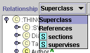
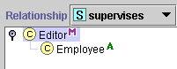

The Class Relationship Menu allows you to choose which relationship between classes is represented in the Class Relationship pane. The following choices are available:
The picture below shows the Class Relationship menu for the class Editor in the Newspaper example. Editor has two Instance slots, responsible_for and sections. Other classes might show more slots, or only the Superclass and Reference choices.

Certain actions can be performed in the Superclass relationship view only. These include creating a new class and rearranging the hierarchy using drag-and-drop.
The view in the Superclasses pane does not change to reflect the choice on the Relationship menu.
The default Superclass relationship displays the subclass-superclass structure of your knowledge base. All the classes in the knowledge base appear in the displayed tree. (Some classes may be hidden. You can choose whether or not hidden classes are displayed in the Class Relationship pane by choosing Configure from the Project menu, going to the Display tab, and toggling the Display Hidden Classes option.) The Superclass view gives you an overall picture of the class structure. This choice is always shown on the menu.
The Reference relationship displays the hierarchy of classes, starting at the selected class, that are related to each other through any of the slots for the class. The Reference view thus shows the union of all the slot reference relationships.
If you select a class in Superclass view, the Class Relationship menu will list all the slots of type Class or Instance for that slot. Selecting a slot from the menu will show the hierarchy of classes, starting at the selected class, that are related to each other through the slot selected on the menu.
For example, the class Editor in the Newspaper example has the Instance slot supervises. The only allowed class for this slot is the class Employee. This is what is shown when supervises is selected.

In more complex knowledge bases, the displayed tree might be more extensive. Multiple classes can be related to the original class through the slot. A class that is related to the selected class through the slot might itself have that slot, and then its related classes would appear in the tree. This allows for a complex hierarchy that diagrams the slot relationship between classes.
The different views can be read as "parent-relationship-child," where "relationship" is displayed on the Relationship menu. For example, in the responsible_for view, Editor - is responsible for - Employee. Similarly, in the Superclass view, Employee - is a superclass of - Employee.
It is also possible to view a
list of all the frames that reference a highlighted class using the
Back-References  class button. See Viewing
Back-References for more information.
class button. See Viewing
Back-References for more information.
Next: Finding a Class